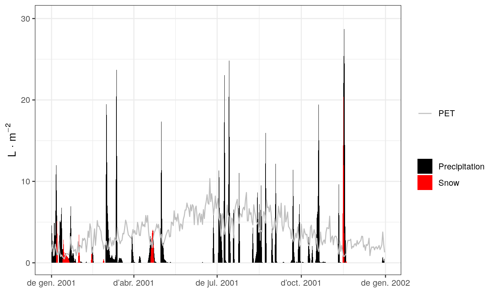

spwb.RdFunction spwb() is a water balance model that determines changes in soil moisture, soil water potentials and plant transpiration and drought stress at daily steps for a given forest stand during a period specified in the input climatic data. Additionally, the function also calculates plant net photosynthesis. Function pwb() performs plant water balance only (i.e. soil moisture dynamics is an input) at daily steps for a given forest stand during a period specified in the input climatic data. On both simulation functions transpiration and photosynthesis processes are conducted with different level of detail depending on the transpiration mode.
spwb(x, soil, meteo, latitude = NA, elevation = NA, slope = NA, aspect = NA) pwb(x, soil, meteo, W, latitude = NA, elevation = NA, slope = NA, aspect = NA, canopyEvaporation = numeric(0), snowMelt = numeric(0), soilEvaporation = numeric(0)) spwb_resetInputs(x, soil, from = NULL, day = NA)
| x | An object of class |
|---|---|
| soil | A list containing the description of the soil (see |
| meteo | A data frame with daily meteorological data series. Row names of the data frame should correspond to date strings with format "yyyy-mm-dd" (see
When using the 'Sperry' transpiration mode the following columns are required:
|
| W | A matrix with the same number of rows as |
| latitude | Latitude (in degrees). Required when using the 'Sperry' transpiration mode. |
| elevation, slope, aspect | Elevation above sea level (in m), slope (in degrees) and aspect (in degrees from North). Required when using the 'Sperry' transpiration mode. Elevation is also required for 'Granier' if snowpack dynamics are simulated. |
| from | An object of class |
| day | An integer with the day from which state variable values stored in |
| canopyEvaporation | A vector of daily canopy evaporation (from interception) values (mm). The length should match the number of rows in |
| soilEvaporation | A vector of daily bare soil evaporation values (mm). The length should match the number of rows in |
| snowMelt | A vector of daily snow melt values (mm). The length should match the number of rows in |
Detailed model description is available in the vignettes section. The model using 'Granier' transpiration mode is illustrated by function transp_transpirationGranier and described in De Caceres et al. (2015). Simulations using the 'Sperry' transpiration mode are computationally much more expensive and are illustrated by function transp_transpirationSperry. Function spwb_resetInputs() allows resetting state variables in x and soil to their defaults, or to copy values of state variables from a previous spwb() simulation results stored in from.
Function spwb returns a list of class 'spwb' whereas Function pwb returns a list of class 'pwb'. There are many elements in common in these lists, so they are listed here together:
"latitude": Latitude (in degrees) given as input.
"topography": Vector with elevation, slope and aspect given as input.
"spwbInput": An (unmodified) copy of the object x of class spwbInput given as input (note that x is modified by the simulation function).
"soilInput": An (unmodified) copy of the object soil of class soil given as input (note that soil is modified by the simulation function).
"WaterBalance": A data frame where different variables (in columns) are given for each simulated day (in rows):
"PET": Potential evapotranspiration (in mm).
"Precipitation": Input precipitation (in mm).
"Rain": Precipitation as rain (in mm).
"Snow": Precipitation as snow (in mm).
"NetRain": Net rain, after accounting for interception (in mm).
"Infiltration": The amount of water infiltrating into the soil (in mm).
"Runoff": The amount of water exported via surface runoff (in mm).
"DeepDrainage": The amount of water exported via deep drainage (in mm).
"Evapotranspiration": Evapotranspiration (in mm).
"SoilEvaporation": Bare soil evaporation (in mm).
"PlantExtraction": Amount of water extracted from soil by plants (in mm) (can only be diferent from transpiration for transpirationMode = "Sperry" when capacitance is considered).
"Transpiration": Plant transpiration (considering all soil layers) (in mm).
"HydraulicRedistribution": Water redistributed among soil layers, transported through the plant hydraulic network (only for transpirationMode = "Sperry").
"Soil": A data frame where different variables (in columns) are given for each simulated day (in rows):
"W.1", ..., "W.k": Relative soil moisture content (relative to field capacity) in each soil layer.
"ML.1", ..., "ML.k": Soil water volume in each soil layer (in L/m2).
"MLTot": Total soil water volume (in L/m2).
"SWE": Snow water equivalent (mm) of the snow pack.
"PlantExt.1", ..., "PlantExt.k": Plant extraction from each soil layer (in mm).
"HydraulicInput.1", ..., "HydraulicInput.k": Water that entered the layer coming from other layers and transported via the plant hydraulic network (in mm) (only for transpirationMode = "Sperry").
"psi.1", ..., "psi.k": Soil water potential in each soil layer (in MPa).
"Stand": A data frame where different variables (in columns) are given for each simulated day (in rows):
"GDD": Cumulative growth degree days.
"LAIcell": LAI of the stand (accounting for leaf phenology) (in m2/m2).
"LAIcelldead": LAI of the stand corresponding to dead leaves (in m2/m2).
"Cm": Water retention capacity of the canopy (in mm) (accounting for leaf phenology).
"LgroundPAR": The proportion of PAR that reaches the ground (accounting for leaf phenology).
"LgroundSWR": The proportion of SWR that reaches the ground (accounting for leaf phenology).
"PlantLAI": A data frame with the daily leaf area index for each plant cohort. Days are in rows and plant cohorts are in columns.
"PlantAbsorbedSWRFraction": A data frame with the fraction of SWR absorbed by each plant cohort. Days are in rows and plant cohorts are in columns.
"PlantTranspiration": A data frame with the amount of daily transpiration (in mm) for each plant cohort. Days are in rows and plant cohorts are in columns.
"PlantPhotosynthesis": A data frame with the amount of daily net photosynthesis (in g C·m-2) for each plant cohort. Days are in rows and plant cohorts are in columns.
"PlantPsi": A data frame with the average daily water potential of each plant (in MPa). Days are in rows and plant cohorts are in columns. Columns in this data frame correspond to the elements in 'SP'.
"PlantStress": A data frame with the amount of daily stress [0-1] suffered by each plant cohort (relative whole-plant conductance). Days are in rows and plant cohorts are in columns.
"subdaily": A list of objects of class spwb_day, one per day simulated (only if required in control parameters, see defaultControl).
If transpirationMode=="Sperry" the list also includes the following elements:
"PlantAbsorbedSWR": A data frame with the daily SWR absorbed by each plant cohort. Days are in rows and plant cohorts are in columns.
"PlantAbsorbedLWR": A data frame with the daily LWR absorbed by each plant cohort. Days are in rows and plant cohorts are in columns.
"dEdP": A data frame with mean daily values of soil-plant conductance (derivative of the supply function) for each plant cohort. Days are in rows and plant cohorts in columns.
"EnergyBalance": A data frame with the daily values of energy balance components for the soil and the canopy.
"Temperature": A data frame with the daily values of minimum/mean/maximum temperatures for the atmosphere (input), canopy and soil.
"LeafPsiMin": A data frame with the minimum (midday) daily (average) leaf water potential of each plant (in MPa). Days are in rows and plant cohorts are in columns. Columns in this data frame correspond to the elements in 'SP'.
"LeafPsiMax": A data frame with the maximum (predawn) daily (average) leaf water potential of each plant (in MPa). Days are in rows and plant cohorts are in columns. Columns in this data frame correspond to the elements in 'SP'.
"LeafPsiMin_SL": A data frame with the minimum (midday) daily sunlit leaf water potential of each plant (in MPa). Days are in rows and plant cohorts are in columns. Columns in this data frame correspond to the elements in 'SP'.
"LeafPsiMax_SL": A data frame with the maximum (predawn) daily sunlit leaf water potential of each plant (in MPa). Days are in rows and plant cohorts are in columns. Columns in this data frame correspond to the elements in 'SP'.
"LeafPsiMin_SH": A data frame with the minimum (midday) daily shade leaf water potential of each plant (in MPa). Days are in rows and plant cohorts are in columns. Columns in this data frame correspond to the elements in 'SP'.
"LeafPsiMax_SH": A data frame with the maximum (predawn) daily shade leaf water potential of each plant (in MPa). Days are in rows and plant cohorts are in columns. Columns in this data frame correspond to the elements in 'SP'.
"LeafRWC": A data frame with the average daily leaf relative water content of each plant (in percent). Days are in rows and plant cohorts are in columns. Columns in this data frame correspond to the elements in 'SP'.
"StemPsi": A data frame with the minimum daily stem water potential of each plant (in MPa). Days are in rows and plant cohorts are in columns. Columns in this data frame correspond to the elements in 'SP'.
"StemPLC": A data frame with the average daily proportion of stem conductance loss of each plant ([0-1]). Days are in rows and plant cohorts are in columns. Columns in this data frame correspond to the elements in 'SP'.
"StemRWC": A data frame with the average daily stem relative water content of each plant (in percent). Days are in rows and plant cohorts are in columns. Columns in this data frame correspond to the elements in 'SP'.
"RootPsi": A data frame with the minimum daily root water potential of each plant (in MPa). Days are in rows and plant cohorts are in columns. Columns in this data frame correspond to the elements in 'SP'.
"RhizoPsi": A list of data frames (one per plant cohort) with the minimum daily root water potential of each plant (in MPa). In each data frame, days are in rows and layers are in columns.
De Cáceres M, Martínez-Vilalta J, Coll L, Llorens P, Casals P, Poyatos R, Pausas JG, Brotons L. (2015) Coupling a water balance model with forest inventory data to predict drought stress: the role of forest structural changes vs. climate changes. Agricultural and Forest Meteorology 213: 77-90 (doi:10.1016/j.agrformet.2015.06.012).
State variables stored in objects x and soil are modified during the simulation. Use function spwb_resetInputs() to reset state variables to defaults. Daily transpiration and photosynthesis values are stored in columns Transpiration and Photosynthesis of object x. Water content relative to field capacity (vector W) of soil is also modified.
#Load example daily meteorological data data(examplemeteo) #Load example plot plant data data(exampleforest) #Default species parameterization data(SpParamsMED) #Initialize soil with default soil params (2 layers) examplesoil = soil(defaultSoilParams(2)) #Initialize control parameters control = defaultControl() #Initialize input x1 = forest2spwbInput(exampleforest,examplesoil, SpParamsMED, control) #Call simulation function S1<-spwb(x1, examplesoil, examplemeteo, elevation = 100)#> Initial soil water content (mm): 200.239 #> Performing daily simulations .....................................done. #> Final soil water content (mm): 180.113 #> Change in soil water content (mm): -20.1257 #> Water balance result (mm): -20.1257 #> Water balance components: #> Precipitation (mm) 513 #> Rain (mm) 462 Snow (mm) 51 #> Interception (mm) 86 Net rainfall (mm) 376 #> Infiltration (mm) 419 Runoff (mm) 8 Deep drainage (mm) 103 #> Soil evaporation (mm) 39 Transpiration (mm) 297#Monthly summary (averages) of soil water balance summary(S1, freq="months",FUN=mean, output="Soil")#> W.1 W.2 ML.1 ML.2 MLTot WTD SWE #> 2001-01-01 0.9922356 0.9947366 72.24882 126.75412 199.0029 1000 1.65056874 #> 2001-02-01 0.9711613 0.9500296 70.71431 121.05734 191.7716 1000 0.27480347 #> 2001-03-01 0.9747463 0.9661769 70.97535 123.11491 194.0903 1000 0.01762496 #> 2001-04-01 0.9538158 0.8615827 69.45131 109.78701 179.2383 1000 0.57895858 #> 2001-05-01 0.9493763 0.8599847 69.12805 109.58338 178.7114 1000 0.00000000 #> 2001-06-01 0.8333673 0.6366546 60.68096 81.12560 141.8066 1000 0.00000000 #> 2001-07-01 0.9583558 0.6870262 69.78189 87.54418 157.3261 1000 0.00000000 #> 2001-08-01 0.9633368 0.7631771 70.14458 97.24769 167.3923 1000 0.00000000 #> 2001-09-01 0.9643429 0.8029288 70.21783 102.31305 172.5309 1000 0.00000000 #> 2001-10-01 0.9768679 0.8261857 71.12983 105.27656 176.4064 1000 0.00000000 #> 2001-11-01 0.9717403 0.9225943 70.75647 117.56141 188.3179 1000 2.59388333 #> 2001-12-01 0.9402455 0.9292045 68.46320 118.40370 186.8669 1000 0.00000000 #> PlantExt.1 PlantExt.2 psi.1 psi.2 #> 2001-01-01 0.06686311 0.2356511 -0.03444909 -0.03401859 #> 2001-02-01 0.13947418 0.4915593 -0.03863988 -0.04416217 #> 2001-03-01 0.14492370 0.5107660 -0.03755349 -0.03965679 #> 2001-04-01 0.18493869 0.6517837 -0.04222177 -0.07286244 #> 2001-05-01 0.21828994 0.7693124 -0.04427942 -0.07676995 #> 2001-06-01 0.31120215 1.0879804 -0.08631691 -0.42670990 #> 2001-07-01 0.26268290 0.9124204 -0.04198163 -0.38689128 #> 2001-08-01 0.26538933 0.9351735 -0.04001082 -0.13920740 #> 2001-09-01 0.20828518 0.7340370 -0.04002550 -0.10297327 #> 2001-10-01 0.14940358 0.5265229 -0.03738415 -0.09492900 #> 2001-11-01 0.10791619 0.3803352 -0.03838629 -0.05214590 #> 2001-12-01 0.10093362 0.3557280 -0.04567248 -0.04910614# NOT RUN { #Initialize soil with default soil params (2 layers) examplesoil2 = soil(defaultSoilParams(2)) #Switch to 'Sperry' transpiration mode control$transpirationMode="Sperry" #Initialize input x2 = forest2spwbInput(exampleforest,examplesoil2, SpParamsMED, control) #Call simulation function (11 days) d = 100:110 S2<-spwb(x2, examplesoil2, examplemeteo[d,], latitude = 41.82592, elevation = 100) # Run the model with 'Sperry' transpiration mode using the water balance of # simulated with the 'Granier' model P2<-pwb(x2, examplesoil2, examplemeteo[d,], latitude = 41.82592, elevation = 100, W = as.matrix(S1$Soil[d, c("W.1", "W.2")]), canopyEvaporation = S1$WaterBalance$Interception[d], snowMelt = S1$WaterBalance$Snowmelt[d], soilEvaporation = S1$WaterBalance$SoilEvaporation[d]) # }